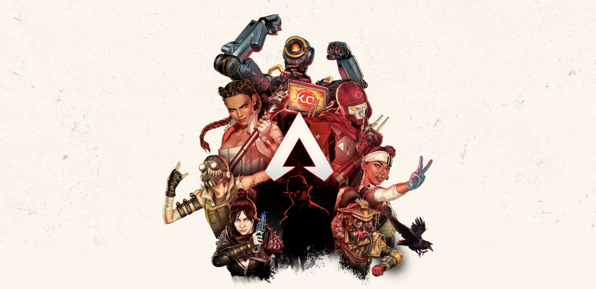

HOW OUR GAME WORKS

A WORLD WHERE ANYTHING GOES
The Frontier War is over. After decades of conflict between the IMC and the militia founded to fight them, the region of space known as the Frontier can finally see peace.
But liberation can come at a cost: the Frontier worlds were left barren by the war, and promised aid dwindled to nothing. With no way to support themselves, those who remained had no choice but to leave their homes. The brave relocated to the Outlands.
A remote cluster of planets on the fringes of the Frontier, the Outlands are untouched by war and teeming with resources and opportunity. But life is cheap here, and danger lurks around every corner. Its pioneers, explorers, and outlaws used to spend their lives locked in an endless power struggle – now, they settle their differences in the Apex Games, a bloodsport where Legends from all corners of the Frontier compete for money, fame, and glory.

Kings Canyon, World’s Edge, and Olympus. You’ve fought there, you’ve died there, but do you know why they were chosen? Hammond Robotics and the Mercenary Syndicate seem to have a hand in everything that shapes the destiny of the Outlands...